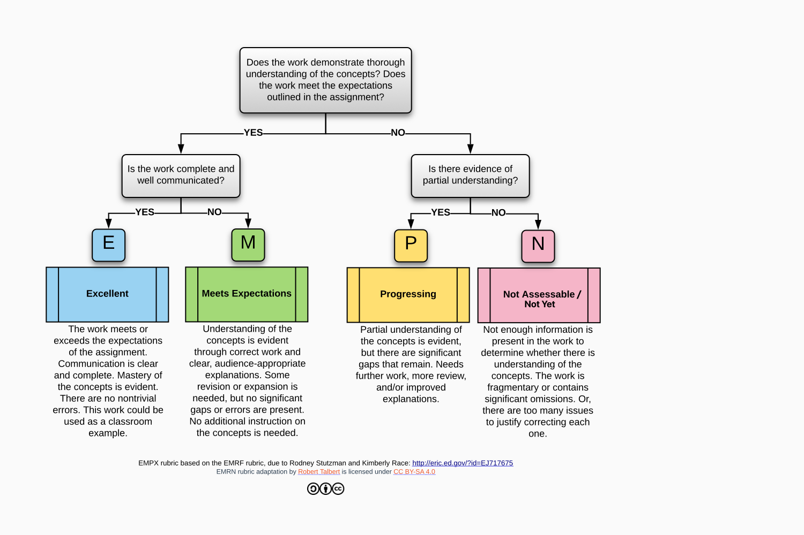

CIS 658 Web Architectures
Winter 2025
- Contact Information:
-
Instructor: Zachary Kurmas Office: MAK C-2-316 / DCIH 530G Phone: (616)-331-8688 Office Hours: MW 11:00-noon (Allendale) Home page: http://localhost:8000MW 3:00-4:00 (DCIH 530G) E-mail is the best way to contact me. During the week, expect a reply within 24 hours. Also, feel free to visit my office any time the door is open, even if it isn't officially office hours.
- Course Objectives:
-
At the end of the course, students will be able to
- Provide in-depth details of the HTTP protocol.
- Construct web pages with HTML 5 and CSS 3.
- Contrast W3C Web Services with RESTful Services.
- Discuss how dynamic content is delivered by web servers.
- Illustrate how a web browser requests resources from a server and interprets the results.
- Create dynamic web pages using Javascript.
- Understand the mechanisms behind responsive web apps.
- Evaluate web application frameworks.
- Create a full three-tier web application.
- Text:
-
- Client-Side Web Development. by Joel Ross and Mike Freeman.
https://info340.github.io/ - Agile Web Development Development with Rails 7 by Ruby and Thomas. ISBN: 978-1-68050-929-8 (Available free through GVSU library)
- Learning React, 2nd Edition by Porcello and Banks. ISBN: 978-1-49205-171-8 (Available free through GVSU library)
- Client-Side Web Development. by Joel Ross and Mike Freeman.
- Prerequisites:
- CIS 500, CIS 511, CIS 512. Students must also be proficient in at least one high-level, general-purpose programming language.
- Grading:
-
Homework and Quizzes: Homework and quiz questions will be scored using the EMPN metric. (See the diagram below.) A mark of "E" or "M" indicates that the submission is complete and clearly demonstrates that the student understands the concepts covered by the assignment. A mark of "P" indicates that the student is making progress, but the assignment requires additional work/revision. A mark of "N" indicates that the assignment not sufficiently complete to assess. Students are expected to revise and re-submit homework until they have earned an "M" or better. However, submissions and re-submissions of homework will only be accepted for 10 days following the due date.
Late Days: Students will ideally submit assignments that meet expectations by the stated due date. There is not an explicit penalty if a project still needs revision after the due date; but, I will track the total number of "late days" (days elapsed between the due date and when the student submission meets expectations). Accumulating an excessive number of late days will lower the final grade. Important: Unless stated otherwise, all assignments must be submitted by the end of the day Wednesday, 17 April.
Final Grade:The final grade in this course is specification-based rather than points-based. You will receive the highest grade for which you meet all the requirements:
*The value in the Homework row is the number of submissions that achieve a mark of "M" or "E".Category D C B A Homework* 8/16 9/16 11/16 12/16 Midterm 60% 70% 77% 87% Semester Project D C- B- A Late Days ≤ 30 ≤ 25 ≤ 20 ≤ 12 - Important Dates:
-
- Drop Day: Friday, 21 March
- Final Exam: Monday, 21 April, 6:00 p.m.
- Course Policies:
-
- Assignments are due at the beginning of class on the due date, unless specified otherwise.
- The penalty for submitting assignments late varies by assignment. It could be as little as one or two points, or as much as no credit for the assignment. However, assignments more than 14 days late may receive a 0 even if "I just forgot to turn it in."
- Unless specified otherwise, all assignments are to be completed individually.
- The deadline to drop with a "W" is Friday, 21 March. Remember, I cannot and will not drop this class for you.
- Attendance is required. I understand that absences are occasionally necessary; however, I reserve the right to lower grades for excessive absences.
-
This course is subject to the GVSU policies listed at
http://www.gvsu.edu/coursepolicies/.
- Special Assistance:
- If there is any student in this class who has special needs because of learning, physical or other disability, please contact me and Disability Support Services (DSS) at 616.331.2490. Furthermore, if you have a disability and think you will need assistance evacuating this classroom and/or building in an emergency situation, please make me aware so I can develop a plan to assist you.